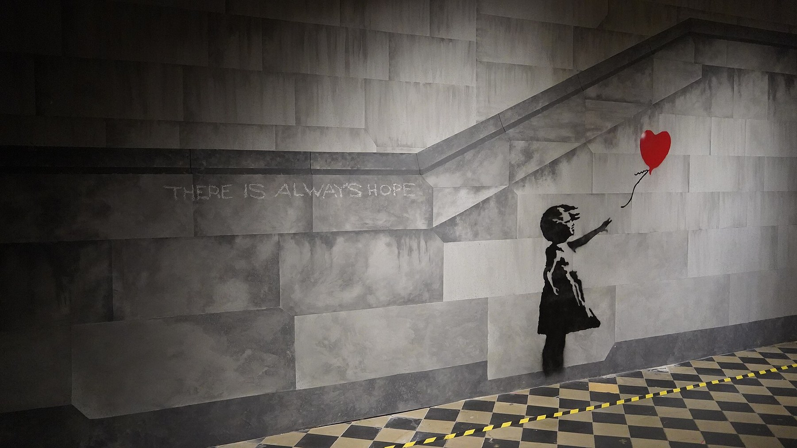
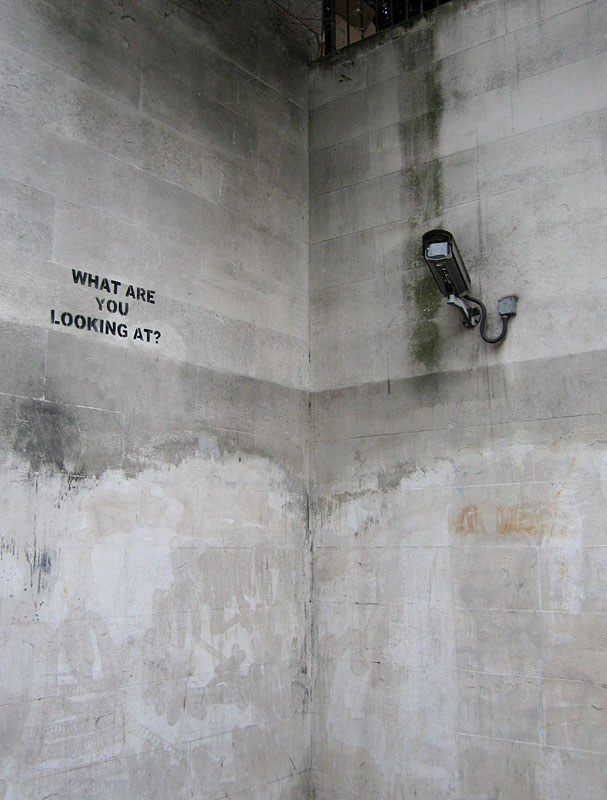
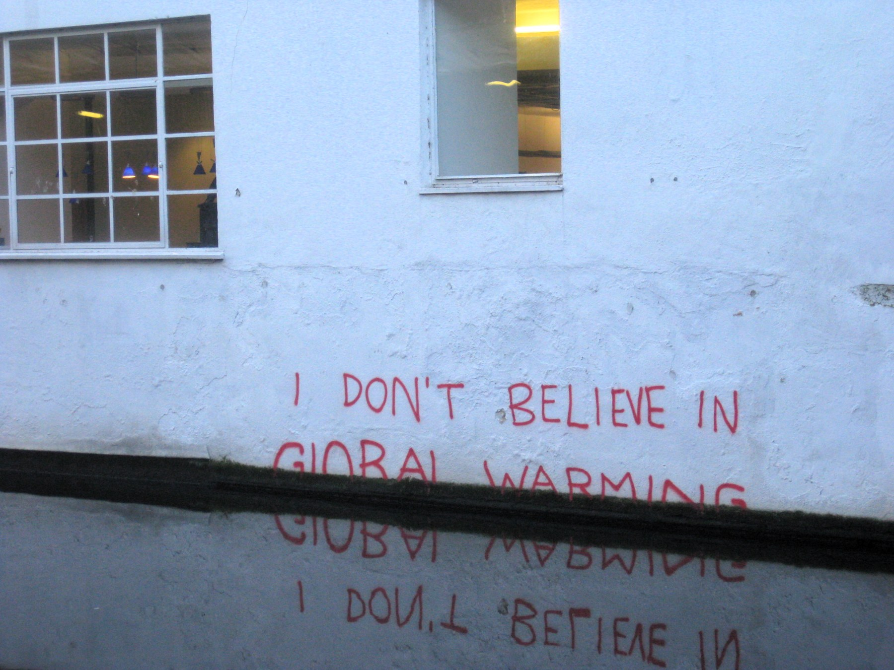
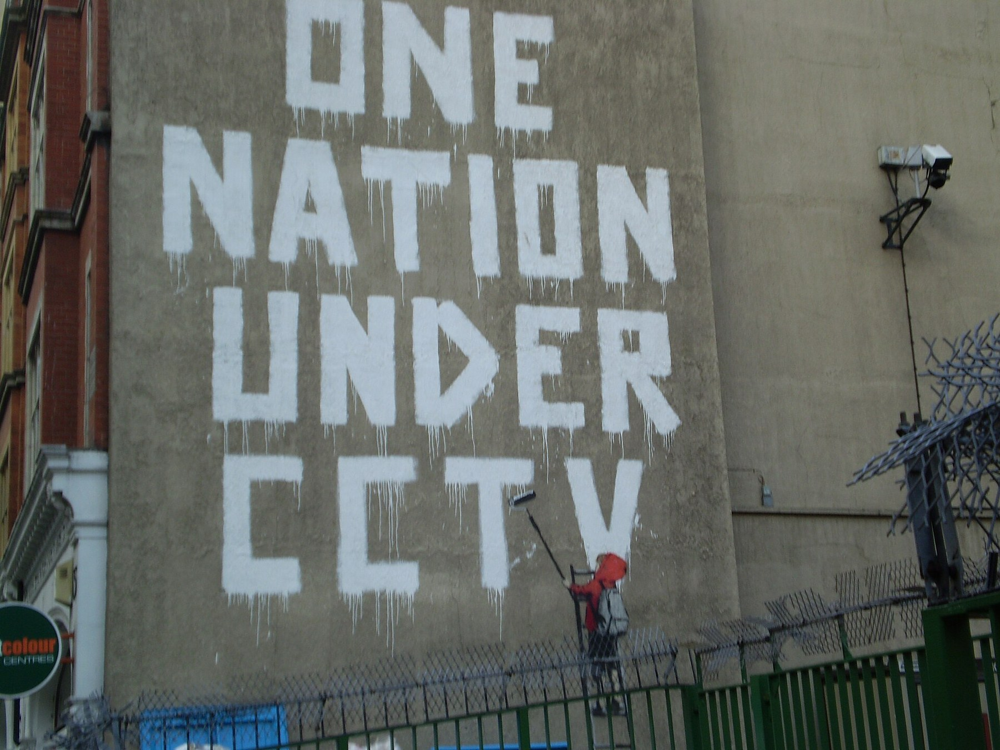
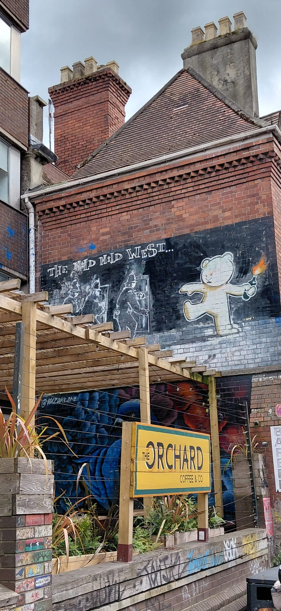
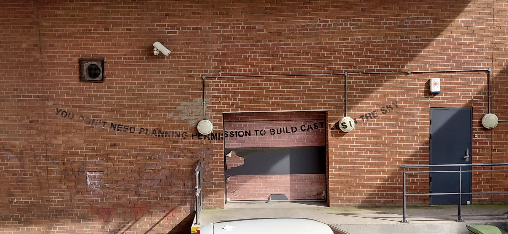
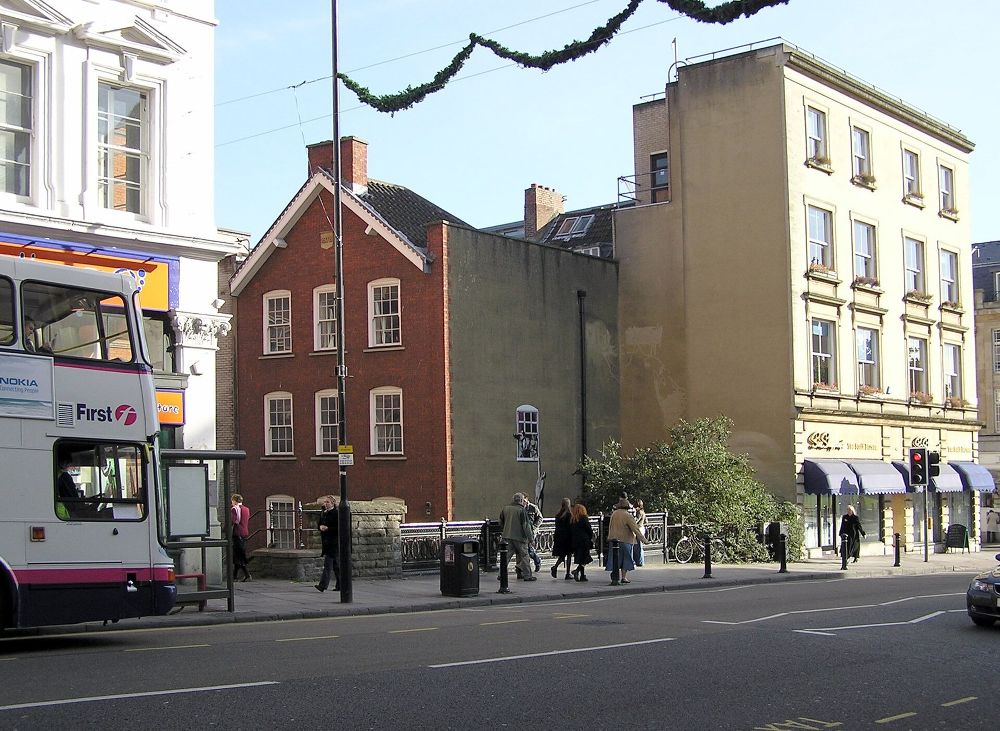

Anglais · Seconde bac pro · A2 and B1 · Lesson 1 of 6
Lesson 1. Can an image speak without a name?
Question of the day: Can a picture speak like a slogan, even before we know who made it?
For the teacher: timing (52 minutes)
| Time | Activity |
|---|---|
| 00 to 05 | Silent observation of Girl with Balloon as a visual slogan: individual diagnostic notes, no research yet |
| 05 to 12 | Diagnostic paired speaking and a short written slogan sentence |
| 12 to 20 | Building your vocabulary: visual slogans, tone, and description or interpretation |
| 20 to 27 | Grammar: there is / there are, present continuous, may |
| 27 to 36 | Three more walls: a camera, a canal, and a written slogan, with the four slogan questions |
| 36 to 42 | Paired interpretation exchange, A2 and B1 pathways |
| 42 to 44 | Three flashcards |
| 44 to 49 | Written record |
| 49 to 52 | Exit sentence and homework |
Checkpoint at minute 44. Every student has written one slogan sentence, named a tone, used one description structure, and spoken to a partner.
Eight-minute essential closing route (replaces the last eight minutes if the class needs more time; it does not add time): 44 to 46: complete There is... / The image says... / The tone is... 46 to 49: each partner reads one slogan and gives a reason. 49 to 51: one vocabulary card and one structure card. 51 to 52: record homework.
A2 outcome
Describe visible details, write a simple slogan sentence, and give a tone with a reason.
B1 outcome
Distinguish description from interpretation, explain how a visual device makes the sentence, and compare two plausible readings.
Step 1 and 2. Diagnostic assessment
Banksy uses a language of his own: slogans, but in the form of drawings. Look at the image in silence. Do not search for the artist's name yet. The photograph shows the famous motif of Girl with Balloon. The original mural appeared in London in 2002. The photograph below is a reconstructed mural in an exhibition in Brussels, not the original wall. We can still study what the image says.

Student sheet
Task A. Observe. Write: 1. Three things you can actually see. 2. One sentence, as if it were a slogan: what does the image "say"? 3. To whom, and in what tone? 4. One question about the image.
A2 pathway
Task B. Speak for 30 seconds. Use: There is... The girl is... The image says... The tone is... because...
Task C. Write three connected sentences, including your slogan sentence.
B1 pathway
Task B. Speak for 60 seconds. Include visible evidence, your slogan sentence, two possible tones or readings, and one question the image cannot answer. Then ask your partner one question.
Task C. Write five or six sentences, keeping description and interpretation apart, and naming one visual device (the stencil, the empty wall, the red balloon).
The teacher uses this first speaking turn to place students on the A2 or the B1 pathway. It is not marked. It is a first observation of production orale en continu, interaction and production écrite, not a CCF simulation.
Teacher's positioning grid (not marked)
| Criterion (aligned with official descriptors) | Towards A2 | Towards B1 |
|---|---|---|
| Réalisation de la tâche | Lists objects, offers a short slogan, sometimes mixes facts and opinions | Separates what is visible from what is guessed, and produces a clear slogan sentence with a tone |
| Production orale en continu / interaction | Short sentences, with support from the frames; answers a simple question | Connected speech, a reason, a second possibility, and a relevant question to the partner |
| Correction and lexical range | there is, present continuous, a simple because | may, a word for tone (ironic, hopeful, warning), a question the image cannot answer |
Step 3. The question of the day
A mural on a wall often has no civil name next to it. Some works carry a painted tag; others are attributed later. The public still meets an author of a kind: a style, a stencil, a repeated motif, a sentence on a wall. The question is not "is there no author at all?" The question is: can the image already speak, like a slogan, before a private identity is known?
Step 4. Building your vocabulary
A. A lexical bank for visual slogans
| Word or phrase | Meaning | Example |
|---|---|---|
| a visual slogan | a message spoken by a picture, with or without written words | This mural is a visual slogan about surveillance. |
| a message / a statement | what the image is trying to say | The message may be a warning. |
| to make a statement | to say something clearly, in public | The wall makes a statement about climate change. |
| to denounce | to say publicly that something is wrong | The image denounces the rise of the water. |
| to mock / to criticise | to make fun of something, or to say that it is wrong | The words mock official advertising. |
| irony / ironic | when the picture says the opposite of what it seems to say, on purpose | The tone is ironic: the words deny what the water shows. |
| tone | the way the message sounds: angry, playful, bitter, hopeful, warning | The tone is playful, but the target is serious. |
| the target / the audience | the person or group the slogan is speaking to | The audience may be passers-by, or a camera. |
| placement | where the work is put; the place can be part of the sentence | The placement in the canal is part of the slogan. |
B. Words for looking at a mural
| Word or phrase | Meaning | Example |
|---|---|---|
| mural | a painting made directly on a wall | The mural is on the side of a building. |
| stencil | a cut-out shape used to paint a repeated image | The girl is painted with a stencil. |
| foreground | the part of the image that appears closest to us | In the foreground, the girl is reaching out. |
| background | the part that appears further away | In the background, the wall is almost empty. |
| anonymous | with a name that is not publicly known | The artist is anonymous as a private person. |
| public space | a place that people can enter or see in ordinary life | The original mural was in a public space. |
| description | saying what you can actually see | A description stays with visible evidence. |
| interpretation | a possible meaning, not a proof | My interpretation is that the balloon is being lost. |
| evidence | what you can point to in the image or in a source | The evidence is the girl's raised hand. |
| I would argue that | a phrase to introduce a reasoned opinion | I would argue that the image already speaks. |
Exercises on vocabulary
Exercise 1. Match. 1. visual slogan 2. to denounce 3. irony 4. tone 5. placement
a. the way the message sounds b. a message spoken by a picture c. saying the opposite on purpose d. to say publicly that something is wrong e. where the work is put, as part of the sentence
Corrigé
1b, 2d, 3c, 4a, 5e.
Exercise 2. Description or interpretation? Write D or I.
- The balloon is red and heart-shaped.
- The girl is sad because she has lost her balloon.
- The girl is reaching towards the balloon with her left hand.
- The image is a slogan about lost hope.
- The wall behind the figure is almost empty.
Corrigé
1 D (visible colour and shape). 2 I (sadness and loss are not proven). 3 D (a visible action). 4 I (a general meaning, a slogan you write). 5 D (what the photograph shows of the wall).
Exercise 3. Fill in the gaps with: slogan · ironic · placement · may · evidence
We can write a visual _______ for this mural, but we must keep _______ and interpretation apart. The empty wall _______ suggest loneliness: that is a possible reading, not a proof. If a sentence is painted so that water covers it, the _______ is part of the message, and the tone may be _______.
Corrigé
slogan; evidence; may; placement; ironic.
Flashcards of the lesson
Each student makes three cards: one word from the slogan bank, one word for arguing, one grammar structure. On the front: the word or structure. On the back: a short meaning, and one example sentence about today's mural. Model:
| Front | Back |
|---|---|
| visual slogan | A message spoken by a picture. Example: This mural is a visual slogan about hope and loss. |
| may + verb | A possibility, not a certainty. Example: The girl may be letting the balloon go. |
| ironic | When the picture says the opposite of what it seems to say. Example: The tone may be ironic. |
Keep the cards for the next lessons. You will reuse them.
Step 5. Three more walls, and a grammar point
Now look at works that were (or are) on real street walls. Some use written words. Some use a real object as the other speaker. In each case, the place is part of the sentence. Answer the four slogan questions for each photograph.
A written slogan next to a real camera
What are you looking at?, in a subway near Hyde Park, faces a real surveillance camera. The words address someone: the camera, or the passer-by, or both.

A2 pathway
Complete: There is a camera. The words say... The image is speaking to... The tone is... because...
B1 pathway
Write four short sentences: the slogan, the addressee, the tone, and the device (the real camera is part of the sentence). Then say whether the question is angry, playful, or both.
Corrigé
Example answers. Other justified answers are possible. The words say: What are you looking at? They may be speaking to the camera, or to us as we look. The tone may be confrontational or ironic: a painted question answers a machine that watches. The device is the pairing of written words with a real camera. We cannot prove the artist's exact intention from the photograph alone.
A written slogan that the water completes
On the Regent's Canal in Camden, the words I DON'T BELIEVE IN GLOBAL WARMING are painted so that the lower line sits in the water. The canal becomes part of the sentence.

A2 pathway
Complete: The words say... The water is... The tone is ironic because... The image denounces...
B1 pathway
Explain, in six to eight lines, how placement turns a written sentence into an ironic slogan. Who is the target? What would change if the same words were painted high and dry on a different wall?
Corrigé
Example answers. The words appear to deny climate change. The water covers part of the sentence, so the place contradicts the claim: that is irony. The target may be climate sceptics, or a wider public. The image denounces rising water, and it does so without a civil name beside it. If the same words were high and dry, the slogan would lose its punch: placement is part of what is said.
A slogan that looks official, and a slogan without words
One Nation Under CCTV, on Newman Street in London: a child is painting huge letters. A uniformed figure and a dog seem to watch. A camera is part of the scene. Then look at The Mild Mild West in Stokes Croft, Bristol, a picture that can speak without writing a sentence, and at a Bristol stencil that is a sentence about permission: You don't need planning permission to build castles in the sky.



Grammar of the lesson
- there is / there are for what exists in the picture: There is a child on a ladder. There are large white letters.
- present continuous for a visible action now: The child is painting. The figure is watching.
- may for a possible reading: The child may be criticising surveillance. We do not know the painter's exact intention from the image alone.
Exercise 4. Choose the correct form.
- There is / There are a dog in the picture.
- The child is paint / is painting the last letter.
- The letters may / are meaning "the nation is watched". (Careful: may is followed by the infinitive without to.)
- There is / There are large letters on the wall.
- The uniformed figure may watch / may be watching the child.
Corrigé
1 There is. 2 is painting. 3 may mean (may + infinitive: The letters may mean...). 4 There are. 5 may be watching (a possible action we see as ongoing).
Exercise 5. Write the slogan. For One Nation Under CCTV, for The Mild Mild West, and for the Bristol stencil, write: one slogan sentence, the audience, the tone, and one visual device. A2: short sentences with the frames. B1: a short paragraph for each, keeping description and interpretation apart.
Corrigé
Example answers. Other justified slogans are possible. One Nation Under CCTV may say: this nation lives under cameras. The audience may be the public, or the authorities. The tone may be critical or ironic: a child paints a huge official-looking sentence while a uniformed figure watches. The Mild Mild West has no written sentence: a teddy bear throws a Molotov cocktail at riot police, a playful figure doing a violent action. The tone may be ironic or angry; the audience may be the city, or the police. The Bristol stencil says, in words: you don't need planning permission to build castles in the sky. It may mock official rules, in a hopeful or ironic tone. None of these readings is a proof of the artist's private intention.
Step 6. Speaking task
A2 pathway
In pairs, present one of today's murals in 30 to 40 seconds, as a visual slogan. Use at least two of these frames: There is... The image says... The tone is... It may... Your partner then asks you one simple question.
B1 pathway
In pairs, compare two murals in about one minute. For each, give the slogan, the audience and the tone. Use may, whereas and I would argue that. End with a question the photographs cannot answer: for example, who owns the wall, or what the artist intended as a private person.
Step 7. Written record
A2 pathway
Copy and complete: There is... The image says... The tone is... I think this picture can / cannot speak without a name because...
B1 pathway
Write six to eight sentences. First describe. Then give your slogan sentence, the audience and the tone, and one visual device. Then answer the question of the day, with a reason, without inventing a civil identity for the artist.
Step 8. Homework
Complete an observation card for Well Hung Lover, at the bottom of Park Street, Bristol (photograph below). Treat it as a visual slogan: what you can see, the slogan sentence you would write under it, the audience, the tone, one visual device, and one thing you cannot establish from the image alone. A2: six short sentences, using there is and may. B1: a short paragraph that keeps description and interpretation apart. Bring your card to Lesson 2. Do not search for a private name.
